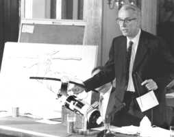

5/23/1973SearchFletcher Explains Methods to Repair Skylab I: Dr. James Fletcher Administrator for NASA, appeared before the United States Senate Committee on Aeronautical and Space Sciences. Dr. Fletcher explained to the committee what methods would be attempted to repair the damaged Skylab I. He stated that if the planned repairs were successful, that it would be possible to accomplish most of the activities scheduled for the two subsequent Skylab missions, each lasting 56 days. (NASA on The Commons)